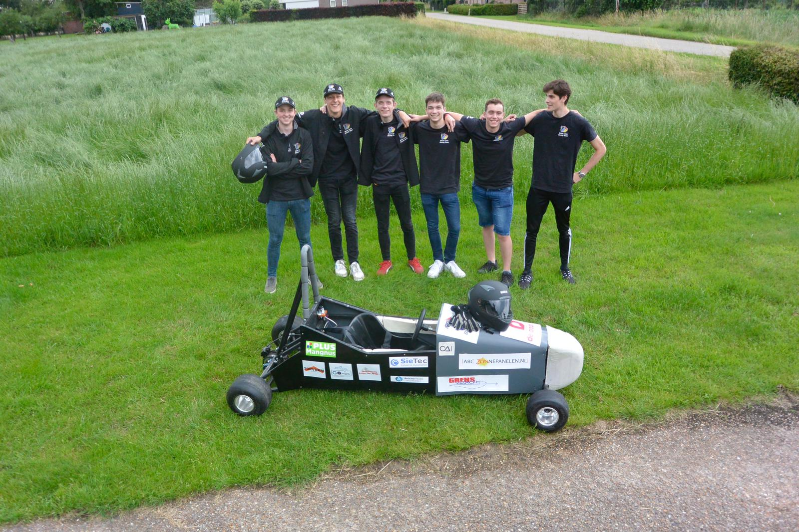
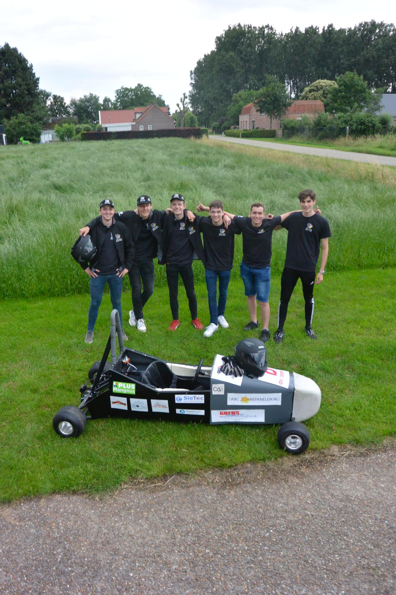
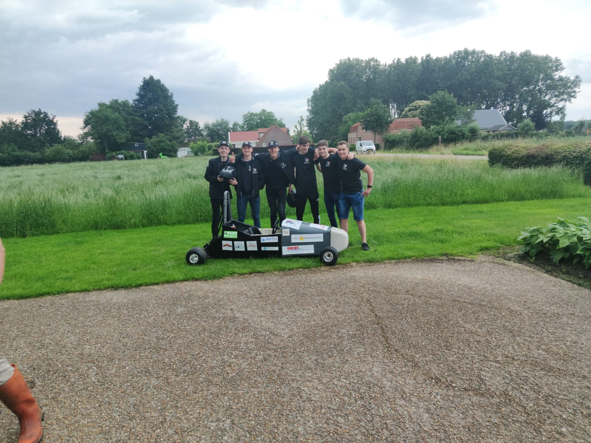
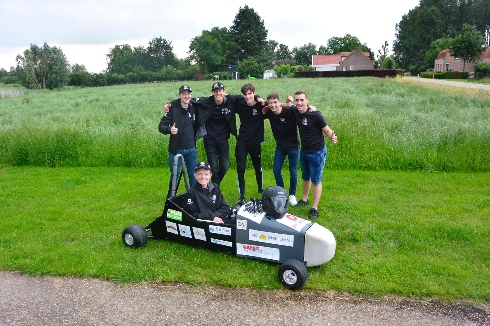
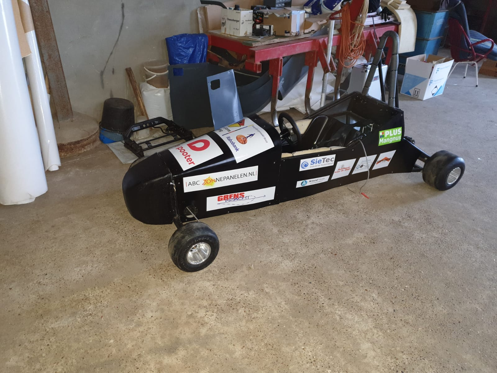
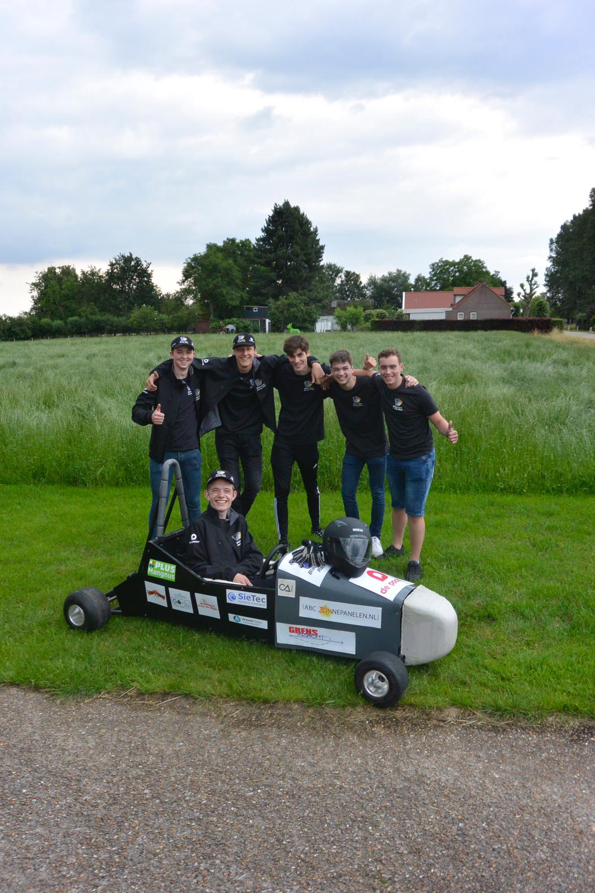

Samen met een paar vrienden van me zijn we tijdens de corona epidemie begonnen aan het maken van een kart. Het idee is dat we een kart maken waarvan iedereen dezelfde accu ,frame en motor heeft. Het enig verschil is dat we het bodywork moeten maken om een verschil te maken. We hebben al een testdag gehad maar jammer genoeg hadden we problemen met de acu waardoor we maar 4 rondes konden rijden.Voor mij het doel van het project is om zoveel mogelijk kennis op te doen en er gewoon plezier van te hebben.
Wie ben ik?
Niek Schlooz
1 / 8

foto van het team met de kart
2 / 8

foto 2
3 / 8

foto 3
4 / 8

foto van de kart met ledlichten
5 / 8

foto 5
6 / 8

foto 6
7 / 8

foto 7
8 / 8

foto 8
We zijn met het team nu op het puntgekomen dat we races gaan rijden. Het project is eigenlijk bedoelt voor scholen men daarom vind ik dat het team hier een knappe pretatie zet.Ik leer hierdoor al door sponoren te zoeken om al in concact te komen met bedrijven en daarnaast heb ik al geleerd om in team verband te werken.Ook heb ik hierbij veel dingen geleerd hoe je een kart kan maken en daardoor wordt je ook veel zelfstandiger.